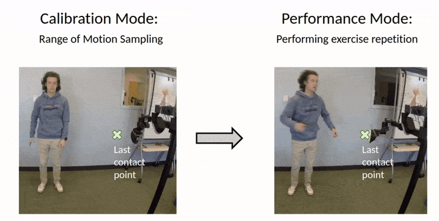

Leading Exercises with a Mobile Manipulator
The SWS is a robotic system designed for physical therapy, featuring a dynamic exercise difficulty adjustment mechanism. This system tailors its approach to individual users in three distinct ways:
- 1. Estimating a user's range of motion using straightforward kinematic models.
- 2. Directly measuring a user's range of motion through haptic feedback.
- 3. Modifying the exercise difficulty based on data-driven models of the user's performance.
1. Personalized to Human kinematic Model
Sws can personalized the exercise to the user's body dimension. The robot can estimate the user's body dimension by measuring the user's height and arm length. The robot can also directly sample the user's range of motion by asking the user to reach the robot's end effector. The robot can then adjust the exercise to the user's body dimension.
2. Range of Motion with Haptic Feedback
Sws is able to directly capture the range of motion of the user by having the user interacting with the robot's end effector, which serves as a target. The robot can then adjust the exercise to the user's range of motion.
3. Adaptive exercise diificulty with user performance model
The exercise difficulty is dynamically adjusted based on the user's performance. The robot can adjust the exercise difficulty by moving along a difficulty vector. The difficulty vector is computed based on the user's kinematic model. All components are personalized according to the user's kinematic model, range of motion, and current performance, which are then recorded for further analysis.
User Study and Analysis
In our user study involving ten participants, we found that individuals with Parkinson's Disease (PD) have a favorable perception of the SWS system, viewing it as both beneficial and user-friendly. Our current robotic system offers verbal instructions and auditory feedback to the users. As part of the therapeutic process, participants engage in cognitive exercises, such as naming various U.S. states and animals during their physical activities. Our findings indicate that people with PD are generally capable of accurately following and executing exercises guided by a robot, underscoring the potential of robot-led physical therapy. A comprehensive analysis of these results can be found in the accompanying paper.